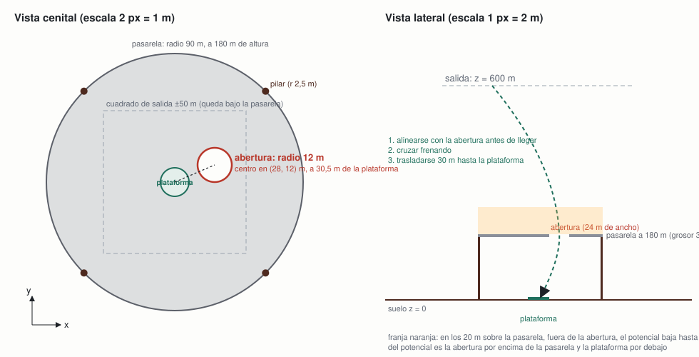

Ambiente v0.4 · nivel 2 (v1): pasarela con abertura desplazada
Equipo Alpha Centauri · ficha 02 Rocket Landing · 6 de noviembre de 2026
Misión de la ficha: aterrizar en una plataforma con velocidad e inclinación seguras y combustible limitado. El nivel 2 añade una decisión de ruta en dos tiempos: una pasarela cubre la plataforma y hay que entrar por su única abertura, desplazada del centro, y después trasladarse por debajo hasta la plataforma.
Esta ficha describe lo que cambia respecto al nivel 1 (ambiente-v0.1.md): el entorno Gymnasium RocketLanding3D-N2-v1 (rocket_env/pasarela.py) hereda la física, la atmósfera, el viento, el combustible, los pasos y las reglas de aterrizaje del nivel 1 sin tocar un número. Sustituye al ambiente 0.2 con torres (ambiente-v0.2.md), que queda retirado: el equipo decidió el 6 de noviembre cambiar el obstáculo por uno que obligue a una decisión más clara, y los modelos de 0.2 siguen siendo reproducibles como históricos.
Mision y mapa

| Elemento | Dónde | Dimensiones |
|---|---|---|
| Plataforma, zona de vuelo, salida | como en v0.1 | radio 10 m; cilindro de 300 × 1200 m; salida a 600 m sobre x, y ∈ [−50, 50] m |
| Pasarela | disco horizontal centrado en la plataforma, a 180 m de altura | radio 90 m, grosor 3 m |
| Abertura | círculo en la pasarela, centrado en (28, 12) m (a 30,5 m del centro) | radio 16 m; con el fuselaje de 3 m, 13 m de margen |
| Pilares | cuatro, en el borde de la pasarela, azimuts 45°, 135°, 225°, 315° | radio 2,5 m, altura 180 m |
La pasarela tiene 90 m de radio para cubrir todo el cuadrado de salida (su diagonal llega a 70,7 m del centro): no se puede rodear, la única vía es la abertura. La abertura no cae sobre la plataforma (su borde más cercano queda a 14,5 m del centro), así que después de cruzarla hay que trasladarse 30 m en horizontal mientras se baja de 180 m a 0 frenando. Los pilares están fuera del cuadrado de salida; solo molestan a quien se desvíe mucho.
Por qué este diseño. La guía pide para el nivel 2 "más decisiones (rutas, obstáculos…)". Con las torres de 0.2 la ruta recta solo cruzaba una torre en el 30 % de las salidas; con la pasarela, la ruta recta choca siempre salvo que la salida caiga sobre la abertura (menos del 5 % del cuadrado). La decisión es inevitable y se ve en el replay: el cohete tiene que irse hacia la abertura y volver.
Variables y unidades
Todo lo de v0.1, más:
| Variable | Significado | Unidad | Rango | Visible para el agente |
|---|---|---|---|---|
| (a_x, a_y, r_a) | centro y radio de la abertura; fijos | m | tabla anterior | sí, como margen r_a − d_a; su posición, a través del objetivo de la fase |
| (o_x, o_y) | objetivo de la fase: la abertura por encima de la pasarela, la plataforma (0, 0) por debajo | m | — | sí, como posición relativa o − p |
| H, R, g | altura, radio y grosor de la pasarela; fijos | m | 180, 90, 3 | H sí, como altura restante hasta la pasarela |
| d_a | distancia horizontal del eje del cohete al centro de la abertura | m | ≥ 0 | sí, como margen r_a − d_a (positivo dentro de la abertura) |
| sobre_pasarela | el cohete está por encima de la pasarela (z > H + g/2) | 0/1 | — | se deduce del signo de H − z; está en info["sobre_pasarela"] |
Constante nueva: radio del fuselaje 3 m (solo para la colisión; la física sigue siendo de masa puntual).
Observaciones y acciones
Observación: 20 valores. Los 16 primeros son exactamente los del nivel 1; después: o_x − x, o_y − y (posición relativa del objetivo de la fase: el centro de la abertura mientras el cohete está por encima de la pasarela y la plataforma una vez debajo, como un sistema de navegación que da el siguiente punto de paso), H − z (altura que queda hasta la pasarela; negativa una vez debajo) y r_a − d_a (margen hasta el borde de la abertura; positivo si el eje está dentro). El objetivo de la fase es la misma referencia que usa el potencial de la recompensa. Es una familia nueva de modelos: una red del nivel 1 espera 16 entradas y una del nivel 2 con torres, 25. AdaptadorN1 recorta la observación a los 16 valores del nivel 1 para evaluar un modelo del nivel 1 a ciegas.
Acción: la misma del nivel 1. Los agentes PPO usan la acción relativa v2.
Dinamica
Igual que en v0.1. Reglas nuevas, comprobadas en cada paso de física (0,1 s):
- Pasarela. Si entre dos pasos de física el cohete cruza el plano de la pasarela (o queda dentro de su grosor) estando a menos de 90 m del centro y con el eje a más de r_a − 3 m del centro de la abertura, la época termina con "colisión". Cruzar por la abertura es legal en los dos sentidos.
- Pilares. Como las torres de 0.2: eje a menos de 2,5 + 3 m del eje del pilar y por debajo de su cima.
Recompensa
Potencial del nivel 1 con dos cambios:
Φ = −d_obj/5 − v_h − |vz − v_seg(z)| − z/10 − 8 · c
- d_obj es la distancia horizontal a la abertura mientras el cohete está por encima de la pasarela, y a la plataforma una vez debajo. Así el potencial guía las dos fases de la decisión.
- c castiga acercarse a la pasarela fuera de la abertura: c = 1 − (z − H)/20 cuando el cohete está en los 20 m por encima de la pasarela y su eje fuera de la abertura (0 en otro caso). Vale hasta 8 puntos, como en 0.2.
Como es una diferencia de potencial, no cambia qué política es óptima; el salto del potencial al cruzar la pasarela es una recompensa de una sola vez que no depende de la política.
Resultado nuevo al terminar: colisión, −100 (pasarela o pilar). Los otros cinco no cambian.
Exito, fracaso y limite de tiempo
Como en v0.1; "colisión" se suma a los fracasos con terminated=True. El límite sigue siendo 50 pasos: desde 600 m, pasar por la abertura (180 m) y trasladarse 30 m debajo cabe con margen (los modelos del nivel 1 aterrizan en 30–40 pasos).
Metricas e incidente
Las tres métricas de v0.1 en la misma suite v1 (200 épocas, semillas desde 10 000 000, con y sin viento de 15 m/s), más el recuento de colisiones.
Dificultad del nivel, medida con el recomendado del nivel 1 jugando a ciegas (python incidente.py --run ppo-v2-v0.1-s1 --ambiente RocketLanding3D-N2-v1):
| Controlador (nivel 1) | En el nivel 1 | Bajo la pasarela, a ciegas | Colisiones |
|---|---|---|---|
ppo-v2-v0.1-s1, recomendado del nivel 1 |
198/200 (99 %) | 10/200 (5 %) | 190 |
| mismo modelo, con viento de 15 m/s | 144/200 (72 %) | 7/200 (3,5 %) | 189 |
Los 10 aterrizajes a ciegas son salidas que caen sobre la abertura por casualidad. Con las torres de 0.2, el mismo modelo conservaba el 72 %: la pasarela es un nivel mucho más exigente.
Incidente / perturbación: el mismo viento de 15 m/s de v0.1; el nivel 3 (v1) lo convierte en operación normal (ambiente-v0.5.md).
Cinco transiciones
Cinco pasos consecutivos del recomendado del nivel 2 v1 (ppo-pasarela-transfer-1m5-v0.4-s2) en la época de evaluación con semilla 10 000 000 (python cli.py transiciones --run ppo-pasarela-transfer-1m5-v0.4-s2). La columna "obstáculos" son las cuatro entradas nuevas: o_x − x, o_y − y (objetivo de la fase: aquí la abertura), H − z (altura hasta la pasarela, negativa por encima) y r_a − d_a (margen hasta el borde de la abertura, positivo dentro). La salida de esta época cae casi sobre la abertura (a 4 m), así que la primera fase es mantenerse en ella mientras baja 420 m.
| # | Observación (resumen) | Obstáculos | Acción | Recompensa | Fin |
|---|---|---|---|---|---|
| 1 | pos (31,7, 10,1, 600,0) m · vel (1,4, 1,1, −19,6) m/s · viento (−6,3, 12,9) m/s | (−4, +2, −420, +12) | motor apagado | +10,28 | no |
| 2 | pos (32,9, 11,2, 578,2) · vel (1,2, 1,4, −27,9) | (−5, +1, −398, +11) | motor apagado | −0,09 | no |
| 3 | pos (33,7, 12,3, 556,1) · vel (1,1, 1,6, −34,1) | (−6, 0, −376, +10) | empuje ×0,30 · 7° hacia −y | −1,31 | no |
| 4 | pos (34,3, 13,2, 534,5) · vel (0,9, 1,6, −37,5) · incl. 7,3° | (−6, −1, −354, +10) | empuje ×0,70 · 8° hacia −y | +1,45 | no |
| 5 | pos (34,7, 14,1, 511,7) · vel (0,4, 1,4, −38,3) · incl. 8,0° | (−7, −2, −332, +9) | empuje ×0,75 · 8° hacia −y | +1,73 | no |
Lectura: deja caer el cohete dos pasos y después enciende el motor inclinado hacia −y para frenar la deriva que lo aleja de la abertura (el margen baja de 12 a 9 m); el viento sopla hacia +y a 12 m/s. La época termina en aterrizaje. Comparadas con las mismas transiciones del modelo del nivel 1 en la ficha 0.1, la diferencia es el objetivo: aquí corrige respecto a la abertura, no respecto a la plataforma.
Test final reservado
El 10 de noviembre se aplicó una sola vez la suite reservada (python suite_reservada.py: misma estructura que la v1, semilla guardada por el equipo fuera del repo, resultado en resultados/suite-reservada/): el recomendado de N2 v1 aterriza el 99,0 % (198/200, 2 choques) frente al 100 % de la suite v1, y el 58,5 % con viento fijo de 15 m/s (68 % en la v1). La diferencia de 1 punto indica que la selección entre semillas no sobreajustó a la suite v1.
Posibles trampas y decisiones pendientes
- Flotar sobre la pasarela. Quedarse por encima hasta agotar los pasos evita la colisión pero cuesta "sin pasos" (−100) y el término −z/10, que siempre empuja a bajar.
- Pasar la abertura demasiado rápido. Debajo quedan 180 m para frenar desde la velocidad de cruce; v_seg(180) = 14,4 m/s. Cruzar a más de 30 m/s obliga a un frenado al límite del empuje. El agente tiene que aprender a llegar a la abertura ya frenando.
- Salir por fuera de la pasarela. Rodearla no es posible (cubre el cuadrado de salida), pero un cohete que derive más de 90 m podría bajar por fuera y entrar por debajo: legal, caro en pasos y combustible, y el castigo de proximidad no lo impide. Se vigilará en los replays.
- Trayectoria por debajo de la pasarela con viento. En el nivel 3 (v1) el viento empuja al cohete lateralmente durante el traslado de 30 m; es la parte sensible de la intervención.
- La abertura es fija. Un modelo podría memorizar su posición; una abertura aleatoria por época sería una versión 0.6. Decisión pendiente.
- Visibilidad en el replay. La pasarela se dibuja translúcida y se vuelve casi transparente cuando queda entre la cámara y el cohete, para no taparlo.
Experimentos del nivel 2 (v1)
Se documentan en configs/<run_id>.json y se resumen aquí al cerrar cada uno (experimento 5 de MLflow, experimento-5-pasarela).
Intento abortado (6 de noviembre, sin run_id). Primera versión de la observación, con la posición relativa de la abertura fija en las entradas 16 y 17, y transferencia simple desde ppo-v2-v0.1-s1 (entradas nuevas en cero). A los 320 000 pasos de 1,5 M la evaluación sin ruido seguía en 2 % y la tasa de entrenamiento en 1 %: la política heredada volaba hacia la plataforma y chocaba con la pasarela antes de aprender a usar las entradas nuevas. Se detuvo y se cambió el diseño a la observación "objetivo de la fase" con herencia de pesos (TRANSFERENCIA_ENTRADAS), que hace que la política de partida vuele hacia la abertura desde el primer paso.
Configuración seleccionada (8 de noviembre): transferencia desde ppo-v2-v0.1-s1 y 1,5 M de pasos, tres semillas. Con la observación "objetivo de la fase" el diseño funciona: el primer aterrizaje llega en la época 13. Las tres semillas se entrenaron y decidieron con el pipeline. La referencia es el recomendado del nivel 1 jugando a ciegas (5 %), porque el recomendado de N2 era entonces un modelo de torres, de otro ambiente, y el pipeline no lo usa como referencia.
| Ejecución | Aterrizajes (suite v1) | Colisiones | Choques | Con viento fijo de 15 m/s | Decisión del pipeline |
|---|---|---|---|---|---|
ppo-pasarela-transfer-1m5-v0.4-s0 |
91,5 % | 14 | 3 | 30,0 % | seleccionada (frente al 5 % a ciegas): catálogo v11 |
ppo-pasarela-transfer-1m5-v0.4-s1 |
97,5 % | 4 | 0 | 52,0 % | seleccionada: mejora a s0 en 6 puntos |
ppo-pasarela-transfer-1m5-v0.4-s2 |
100 % | 0 | 0 | 68,0 % | seleccionada: recomendado de N2; s1 queda como anterior |
| media ± desviación típica | 96,3 ± 4,4 % | 6,0 ± 7,2 | 50,0 ± 19,1 % |
Lectura:
- La pasarela se aprende: de 5 % a ciegas a 96 % de media. La herencia de los pesos de posición es lo que lo hizo posible (el intento sin ella seguía en 2 %).
- La variabilidad entre semillas es grande, sobre todo con viento (30 % a 68 %). Las semillas se entrenaron como réplicas, pero el pipeline las compara con el recomendado vigente y promueve a la que mejora en 2 puntos, así que el recomendado es la mejor de tres (100 %). Lo esperable de la receta es ~96 %.
- La fragilidad con viento fijo de 15 m/s (50 % de media, con la colisión con la pasarela como fallo principal) es el incidente que el nivel 3 v1 convierte en operación normal (ambiente-v0.5.md).
- Cada cambio de recomendado queda en el historial de catalogo.json. El anterior de N2 es ahora s1; el modelo de torres (ppo-n2-transfer-1m5-v0.2-s1) salió del catálogo al promover s1, aunque sigue reproducible como histórico.
Anexo: cómo reproducir
python -m pytest tests/test_ambiente_pasarela.py # contrato del nivel 2 v1 (y 3 v1)
python incidente.py --run ppo-v2-v0.1-s1 --ambiente RocketLanding3D-N2-v1 # dificultad: modelo del nivel 1 a ciegas
.venv-prefect/bin/python pipelines/entrenar_publicar.py --ambiente RocketLanding3D-N2-v1 --seed 0 \
--run-id ppo-pasarela-transfer-1m5-v0.4-s0 --desde ppo-v2-v0.1-s1 --total-timesteps 1500000 --baseline ppo-v2-v0.1-s1 --push